Diffuse scattering
Thermal I
Thermal II
Occupational I
Occupational II
Longitudinal waves
Transversal waves
Short range order
Stacking faults
Interactive examples
Displacement waves
Short range order
Stacking faults
Goto
Contents
|
This example shows the effect of stacking faults. They are illustrated by
use of a 2-D example. The crystal is build up of rows corresponding to a
primitive unit structure. Three different layers are stacked: a at
x=0.0, b at x=1/3 and c at x=2/3. The stacking sequence is
controlled by two probabilities ALPHA and BETA. The meaning of these
probabilities is defined as:
ALPHA probability of "ab" followed by "a"
1 - ALPHA probability of "ab" followed by "c"
BETA probability of "ba" followed by "b"
1 - BETA probability of "ba" followed by "c"
ALPHA BETA resulting structure
0.0 0.0 pure cubic sequence
0.05 0.05 Sequence of cubic twins
0.5 0.5 random stacking
1.0 1.0 pure hexagonal sequence
|
The layers "a","b" and "c" can be rotated cylindrically.
The following images show a sequence going from ALPHA=BETA=0, i.e. pure cubic
sequence to ALPHA=BETA=1, a pure hexagonal sequence. The left image shows
part of the crystal, the right image the corresponding Fourier transform.
To get a larger image just click on the corresponding picture.
A note on the indices: The crystal was created on a square coordinate system
with the x=1 being the distance between atoms in each row and y=1 being the
separation of rows. Accordingly the reciprocal space direction labeled
corresponds to the [110] direction of the three dimensional hexagonal or
cubic crystal. The reciprocal k direction corresponds to the hexagonal
[001] and the cubic [111] direction. The spacing is doubled for a hexagonal
crystal and tripled for a cubic crystal.
ALPHA=BETA=0.00
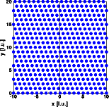
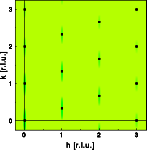
The first structure is a perfect "abc" sequence. Only sharp Bragg reflections
of the cubic structure are observed.
ALPHA=BETA=0.05
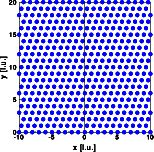
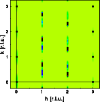
The probability of a hexagonal sequence is very low. Accordingly if such a
sequence occurs, the crystal is continued immediately as the cubic structure
in its twined orientation. The Bragg reflections at h=0 and h=3 remain
invariant, in addition to the Bragg reflections of the first image, those
of the twined orientation appear. Weak diffuse streaks connect the Bragg
reflections at h=1 and h=2.
ALPHA=BETA=0.20
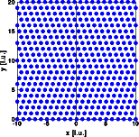
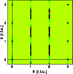
The probability for hexagonal stacking increases. The Bragg reflections at
h=1 and h=2 are replaced by diffuse streaks that are absent at integer k.
ALPHA=BETA=0.50
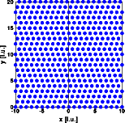
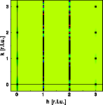
The random stacking of cubic and hexagonal sequences causes continuous
diffuse streaks at h=1 and h=3. As for all the other situations, the Bragg
reflections at h=3n remain invariant.
ALPHA=BETA=0.80
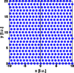
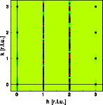
The crystal becomes predominantly hexagonal. The diffuse streaks start to
develop sharp maxima at k=n and k=n+0.5.
ALPHA=BETA=1.00
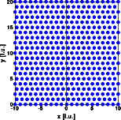
A perfect hexagonal crystal has been created. The diffuse streaks have
disappeared, the Bragg reflections of the hexagonal structure result.
|